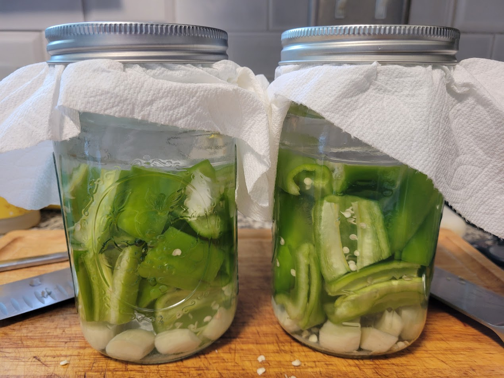

Nobody loves food spoilage. It's bad for the planet, bad for our wallets, and bad for our tastebuds. But, with some simple techniques and common household ingredients, you can preserve (and even upgrade!) the flavor of fruits, veggies, and other staples. Whether you had a bumper crop in your garden, went a little too wild in the produce section at the store, or simply want to capture the flavor of your favorite seasonal ingredient, there are a variety of techniques even an inexperienced home chef can harness!
Embrace the funk by learning some easy applications of fermentation and preservation:

Lactofermentation